관람 안내
운영 시간: 월–금 10:00–16:00 (15:30까지 입장 가능)
쉬는 날: 토–일, 법정 공휴일, 학교 설립 기념일(4/19)
전화번호: 02-901-8131
안내
조선시대와 근대 우리나라 여성들의 생활민속문화재를 체계적으로 전시하여 한국 여성들의 생활문화상을 집중적으로 보여주고 있을 뿐만 아니라 종합박물관의 성격도 함께 겸하고 있다. 우리나라 여성들의 생활사를 살펴볼 수 있는 문화재 약 4,000여 점을 소장하고 있으며, 금속·나무·종이·석조공예품 등이 약 60%로 가장 많은 비중을 차지한다. 복식(직물, 금속장신구 포함)류는 약 10%를 차지하며, 본 대학의 교육프로그램과 연계된 각종 전시와 연구 등을 수행하고, 지역사회와의 문화적 교류를 통해 복합문화공간으로 활용하고 있다.
시설 규모
연면적: 1280.62m2(387.39평)
전시면적: 934.57m2(283.2평)
소장품
성격: 조선시대 민속유물 및 기타
수량: 4000여점
종류: 토기·도자기, 회화, 목공예, 금속공예, 남녀복식, 짚플공예, 지공예
전시실 안내
- 회화․도자실 조선시대의 일반회화․민화, 고려시대부터 조선시대까지 도자기 전시
- 목공예실 조선시대의 목가구 전시와 규방 연출
- 복식실 조선시대부터 근대까지 남녀복식 및 장신구, 자수품 전시
- 금속공예실 고려시대부터 근대까지 금속공예품 전시
- 야외전시실 조선시대 석조물 전시
1971
- 5월운니동 캠퍼스 D관 7층 박물관 운영 시작
1982
- 2월쌍문동 캠퍼스 가정관으로 옮겨 운영 시작
1986
- 4월쌍문동 캠퍼스 도서관으로 옮겨 운영 시작
- 6월덕성여자대학교 박물관, 소장품 목록 출판
1987
- 5월제1회 특별기획전 <한국의 지공예전> 개최;
- 12월『한국의 지공예전』작품 목록 출판
1988
- 5월제2회 특별기획전시 <한국의 침선전> 개최
1993
- 10월제3회 특별기획전시 <한국의 등기전> 개최
2005
- 10월박물관 소장품 목록 출판
- 10월쌍문동 캠퍼스 차미리사관으로 옮겨 운영 시작
관람 안내
운영 시간: 월–금 10:00–16:00 (15:30까지 입장 가능)
쉬는 날: 토–일, 법정 공휴일, 학교 설립 기념일(4/19)
전화번호: 02-901-8131
주의사항
- 소장품을 만지지 말아 주세요.
- 음식물, 큰 짐은 전시실 입장이 제한될 수 있습니다.
- 플래시 촬영 및 삼각대 사용은 제한됩니다.
위치: 덕성여자대학교 차미리사관 지하 1층


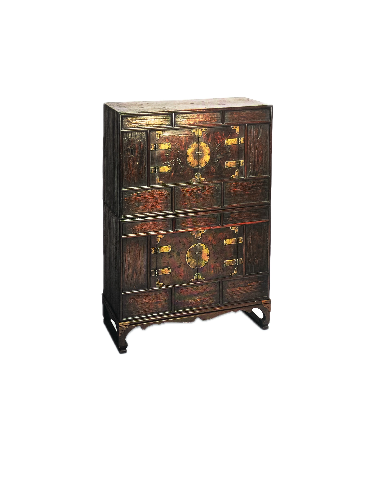
농은 서랍장보다 작고 상자처럼 생긴 수납 가구입니다. 주로 옷을 보관하는 데 사용되었습니다.
특히 여성의 방에 많이 두었으며, 그 시대의 유행과 미적 감각을 잘 보여주는 가구였습니다.
화려한 금속 장식이나 나무의 문양은 당시 장인 기술과 미적 취향을 반영하고 있어, 한국 전통 가구의 아름다움을 느낄 수 있습니다.
반닫이는 뚜껑이 위쪽 절반만 열리는 상자 형태의 가구입니다. 옷이나 책, 그릇, 또는 중요한 물건들을 넣어 보관했으며, 크기는 작지만 무겁고 아주 튼튼했습니다.
반닫이의 겉면에는 청동(bronze)이나 황동(brass) 장식이 붙어 있는데, 이는 기능뿐 아니라 가구의 아름다움을 더해주는 요소였습니다.
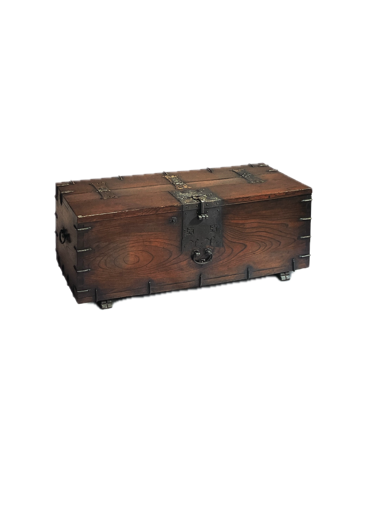
궤는 뚜껑을 위로 들어 올려 여는 나무 상자로, 옷이나 귀중한 물건을 넣어 보관하는 데 사용되었습니다.
특히 결혼을 앞둔 신부가 혼수품과 개인 물건을 넣어 결혼할 때 함께 가져가던 중요한 가구이기도 합니다.
오늘날 우리가 사용하는 여행용 트렁크(trunk)와 기능이 비슷하다고 할 수 있습니다.
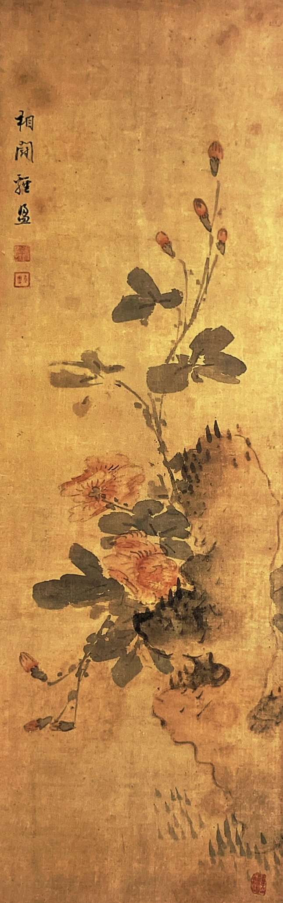
이 그림은 조선 후기에 활동한 화가인 김수철의 <모란도>입니다.
김수철은 자신만의 스타일을 만든 화가입니다.
그의 그림은 단순하지만 간결하고 깔끔한(simple and clean) 구도가 특징입니다.
이 그림은 옅은 먹(light ink)으로 모란 꽃의 윤곽선(outline)을 빠르게 그린 다음, 꽃을 깔끔하고 간단하게 표현했습니다.
<모란도>와 같은 화훼도(flower-and-plant painting)는 이러한 분위기를 완성하는 중요한 장식품이었고, 조선시대 여성들이 어떤 미적 세계를 즐겼는지
보여주는 자료입니다.
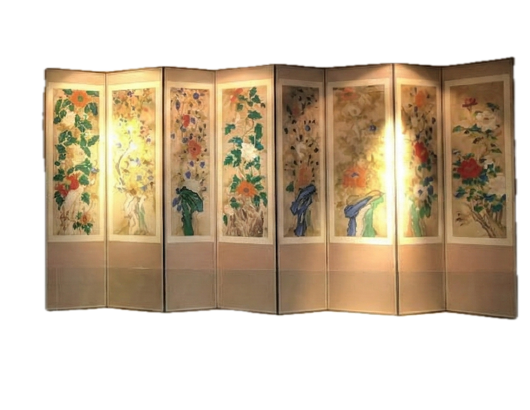
병풍은 여러 장의 그림을 붙여 만든 접는 가림막(folding screen)입니다.
병풍은 바람을 막고 공간을 나누는 실용적 도구이면서, 꽃과 길상 그림을 통해 방의 분위기를 밝히고 여성들의 취향과 축복의 의미를 담는 중요한 장식품이었습니다.
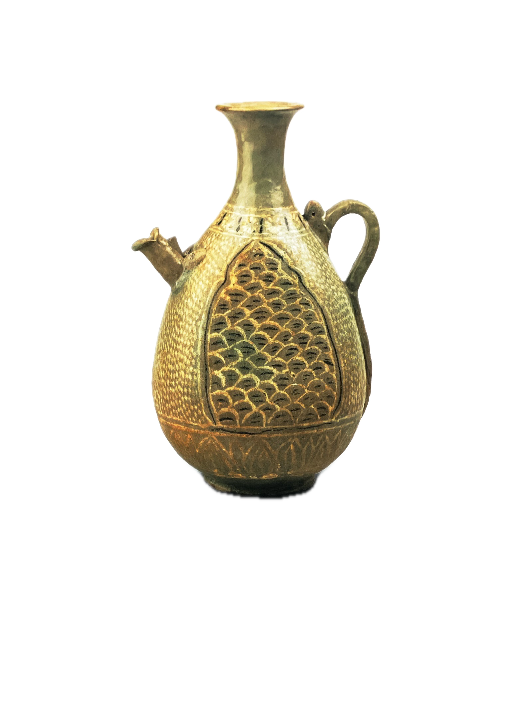
이 도자기는 글씨나 그림을 그릴 때 물을 한 방울씩 떨어뜨리는 주전자입니다.
규방에서는 바느질뿐 아니라 글쓰기와 그림도 즐겼기 때문에 수주는 일상적으로 사용되는 실용 도구였습니다.
용의 머리와 꼬리를 형상화한 디자인, 바늘·국화·연꽃 등 섬세한 문양은 작은 생활 도구를 예술품처럼 보이게 해줍니다.
옅은 회청색 유약은 분청사기의 자연스러운 아름다움을 보여줍니다.
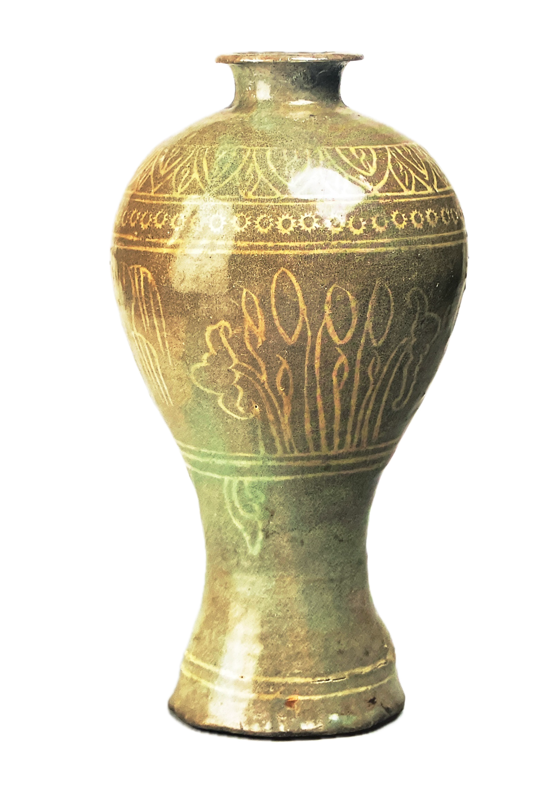
이 도자기는 조선시대 분청사기매병입니다.
매병은 규방을 밝히기 위해 꽃을 꽂아두는 장식용 도자기입니다.
이 매병은 가늘고 단정한 형태에 연꽃과 국화, 버들 같은 식물 문양이 새겨져 있으며, 옅은 회청색 유약 덕분에 규방의 차분한 분위기와 잘 어울립니다.
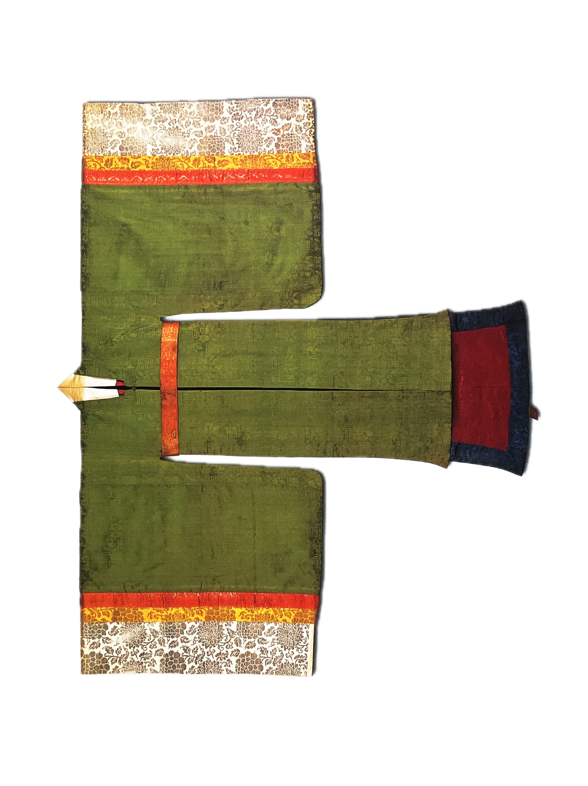
원삼은 단순한 겉옷이 아니라, 여성의 품격과 신분 그리고 삶의 가장 중요한 순간을 상징하는 특별한 옷입니다. 왕실 여성들은 신분에 따라
색으로 구별되는 원삼을 입었습니다.
황후는 노란색, 왕비는 붉은색, 공주는 연두색을 입었습니다. 그중 일반 여성에게 허용되었던 색은 녹색이었고, 특히 결혼과 같은 삶의
가장
빛나는
순간에 입는 예복이었습니다.
녹원삼의 소매에는 여러 색이 조화된 색동이 있고 허리에는 붉은 띠를 두르며, 행복과 사랑, 그리고 화합을 상징합니다.
그래서 녹원삼은
새로운
시작을
축복하는 의미 있는 옷으로 사용되었습니다.
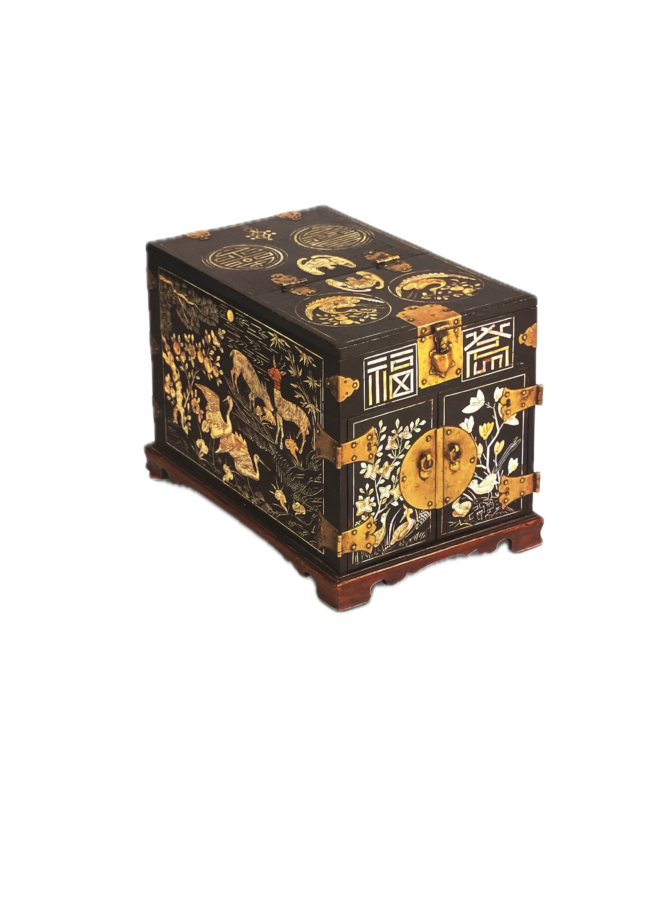
나전경대는 조선시대 여성들이 화장 도구를 보관하던 상자입니다. 검은 바탕 위에 빛나는 조개껍데기 조각, 즉 나전(lacquerware inlaid with mother-of-pearl)으로 학, 거북, 십장생무늬(ten symbols of longevity)가 장식되어 있습니다. 이 무늬들은 오래 사는 삶, 건강, 행복, 고운 마음을 의미합니다. 문에는 제비 꼬리 모양과 용 얼굴을 금으로 장식했고 자물쇠도 달려 있습니다. 이것은 단지 장식이 아니라 여성의 소중한 물건과 비밀을 지키는 마음의 공간입니다.
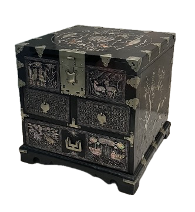
나전빗접은 여성들이 머리와 얼굴을 꾸미는 도구를 보관하는 상자입니다.
앞면에는 3개의 서랍이 있고 서랍에는
석류(pomegranate)나
'ㄷ'자 모양의 고리가 달려 있습니다.
상자 전체에는 봉황(phoenix), 사슴, 거북, 학 같은 동물들이 장식되어 있는데 이 동물들은 모두 행복, 장수, 좋은 인연
그리고
복을
부르는 상징들입니다.
또 옆면에는 물가 풍경이 그려져 있어 상자를 열고 닫는 순간마다 마치 조용한 호숫가를 바라보는 느낌을 줍니다. 나전빗접은 단순한 보관 상자가 아니라
여성의
시간을 담는 상자, 사랑과 소망을 간직하는 조용한 공간입니다.
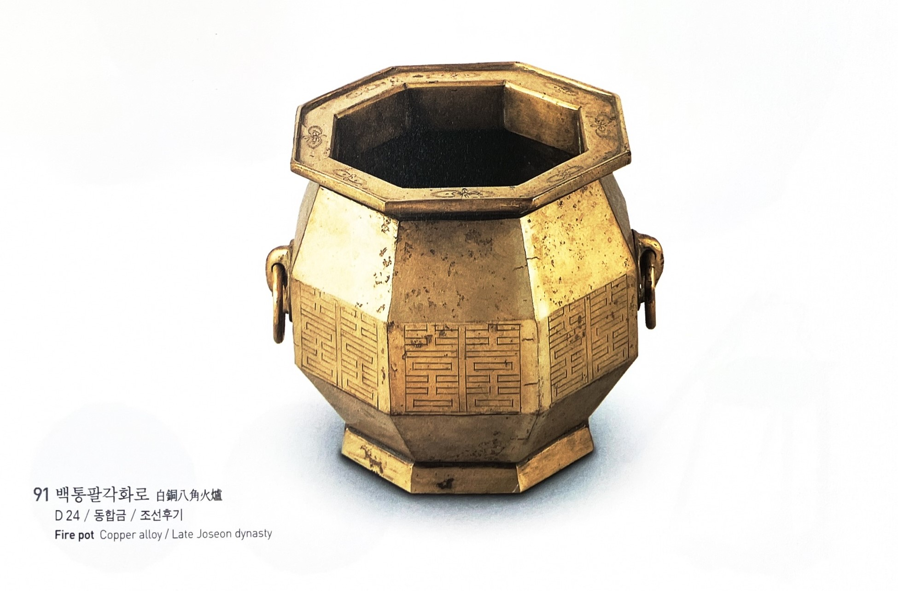
화로는 불이나 향(incense)을 피우는 용도의 그릇입니다.
백동팔각화로는 조선시대 양반(nobleman)의 집에서 사용한 8각 모양의 은빛 그릇이며, 방을 따뜻하게
만들기 위해 썼습니다.
실생활에서 쓰는 동시에 장식품으로서 아름다운 형태를 지니고 있습니다.
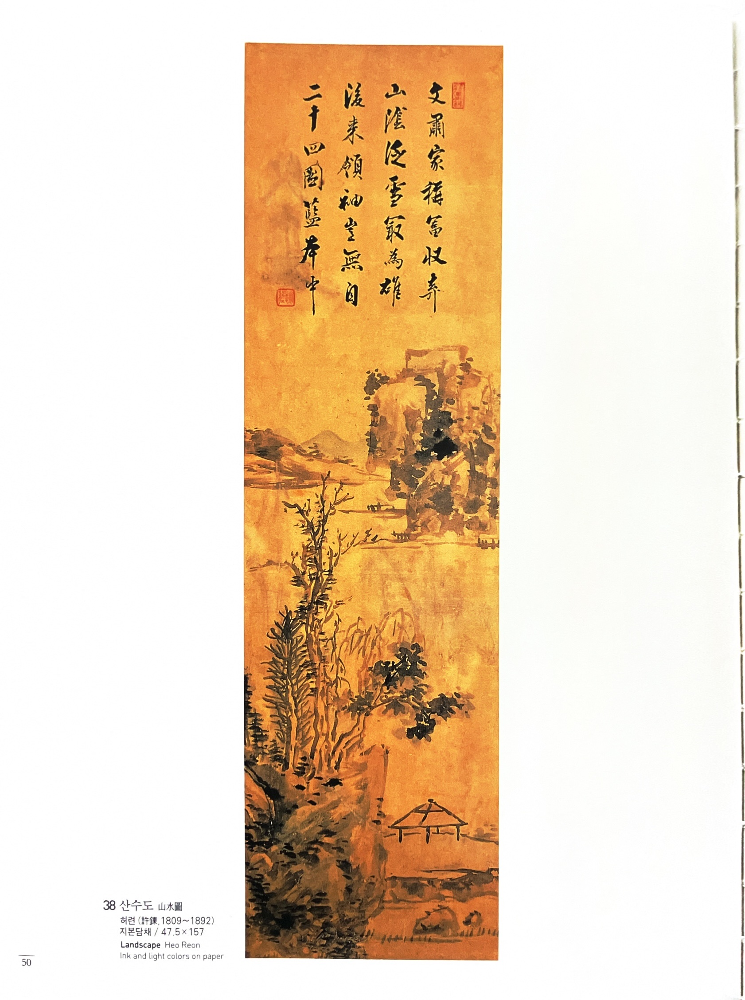
이 그림은 조선 후기에 활동한 화가인 허련의 <산수도>입니다.
그림을 가까운 쪽과 먼 쪽으로 나누고 그 가운데에 강을 표현한 2단 구도입니다.
언덕 위에 나무와
정자(pavilion)를 그린 방식은 중국 화가인 예찬의 영향입니다.
그러나 거친 붓질과 연한 파란색 표현에서 허련만의 특징이 드러납니다.
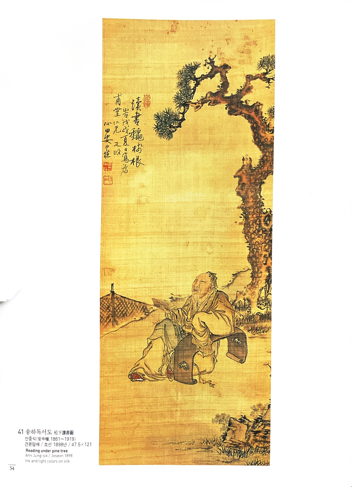
이 그림은 화가 안중식의 <송하독서도>입니다.
나무 아래에 사람이 있는 전통적인 구도를 따르고 있습니다.
그러나 살아 움직이는 것처럼 표현한 인물과 대담하게 그린
소나무, 색과 먹(ink)의 조화는 안중식만의 새로운 방식입니다
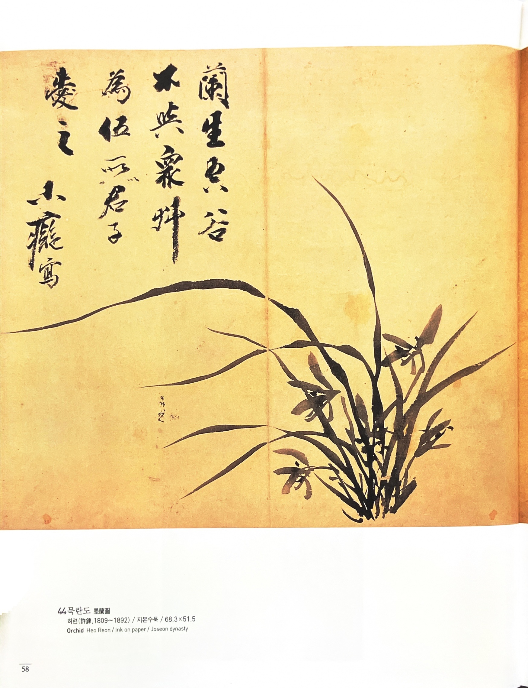
이 그림은 조선 후기에 활동한 화가인 허련의 <묵란도>입니다.
옅은 먹(ink)으로 난초(orchid)를 그렸습니다. 눈에 띄지 않는 곳에서 혼자 은은한 향기를 내는
난초는 한국 전통 그림에서 자주 등장하는 식물 중 하나입니다.
화가는 그림을 그리며 난초처럼 절제(moderation)하는 사람이 될 수 있기를 바랐습니다.
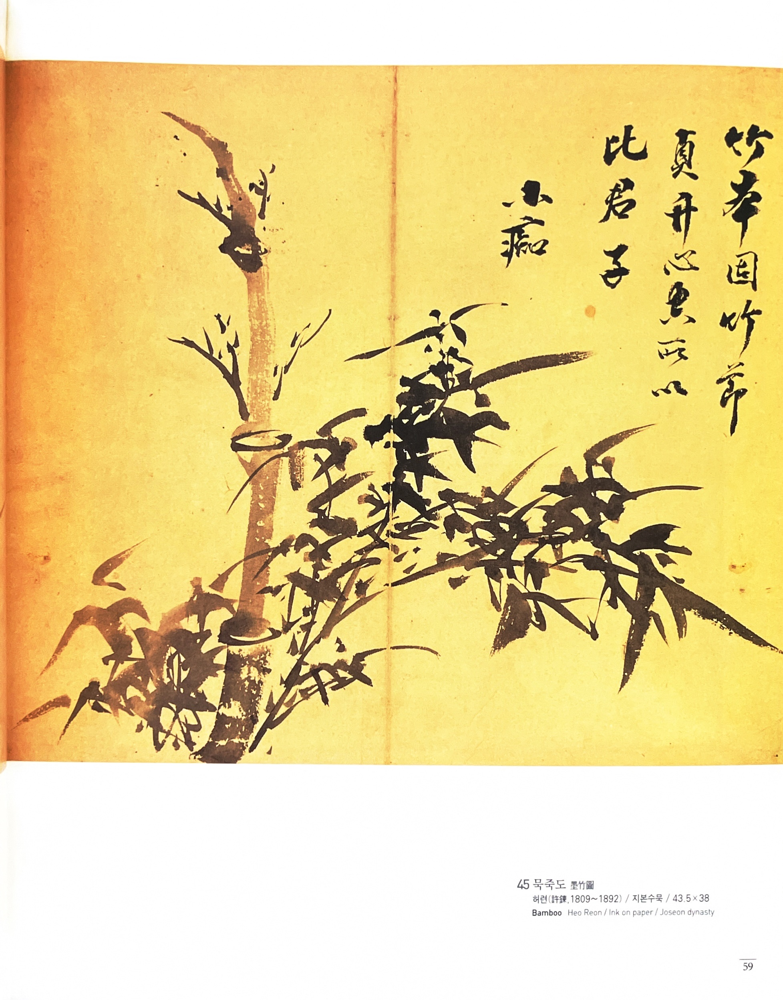
이 그림은 조선 후기에 활동한 화가인 허련의 <묵죽도>입니다.
옅은 먹(ink)으로 대나무(bamboo)를 그렸습니다. 추운 겨울에도 잎이 푸르고 곧게 자라는 대나무는
한국 전통 그림에서 자주 등장하는 식물 중 하나입니다.
화가는 그림을 그리며 대나무처럼 강직한(upright) 사람이 될 수 있기를 바랐습니다
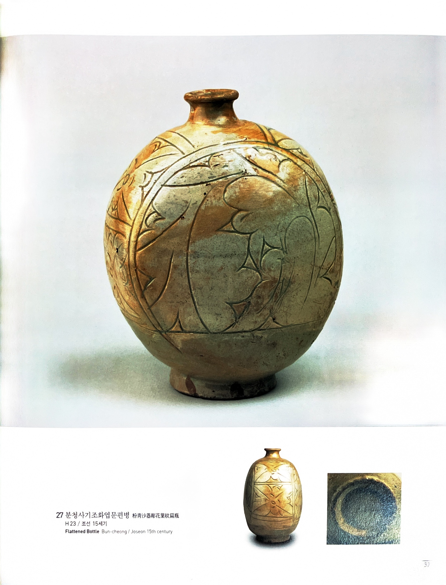
수직으로 내려오는 굽(바닥에 붙은 받침)을 제외한 전체에 흰 흙을 붓으로 두껍게 발랐습니다.
앞면과 옆면에는 식물 모양을 간결하고 힘 있는 선으로 새겼습니다.
옅은
회색과 푸른색이 섞인 유약(glaze)을 입혀 겉이 빛나도록 만들었는데, 바닥 부분에는 붉은 갈색 흙이 그대로 드러나 있습니다.
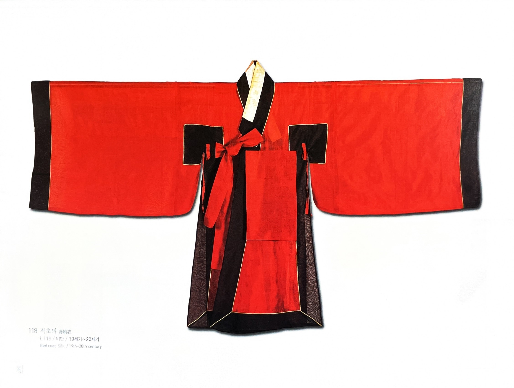
적초의는 조선시대 관리(government official)가 궁중 행사 때 입는 예복(formal dress) 중 가장 화려한 겉옷입니다.
전통 옷감인 갑사로
만들었으며, 면이 한 개인 뒤와 달리 앞은 두 개의 면이 하나로 연결되어 있습니다.
이 적초의에는 그 안에 입는 적초상과 옷 뒤에 늘어뜨리는 장식용 끈을 단 흔적이
있습니다.
오른쪽에는 옷을 단정하게 입을 수 있도록 도와주는 끈을 매어 입었습니다.
전통 고급 옷감 재료와 정교한 바느질이 특징이며, 당시 예복 양식을 잘 보여주는
자료입니다
덕새와 함께하는 덕성여자대학교 박물관, AI 도슨트 박 덕덕
농은 서랍장보다 작고 상자처럼 생긴 수납 가구입니다. 주로 옷을 보관하는 데 사용되었습니다.
특히 여성의 방에 많이 두었으며, 그 시대의 유행과 미적 감각을 잘 보여주는 가구였습니다.
화려한 금속 장식이나 나무의 문양은 당시 장인 기술과 미적 취향을 반영하고 있어, 한국 전통 가구의 아름다움을 느낄 수 있습니다.
반닫이는 뚜껑이 위쪽 절반만 열리는 상자 형태의 가구입니다. 옷이나 책, 그릇, 또는 중요한 물건들을 넣어 보관했으며, 크기는 작지만 무겁고 아주 튼튼했습니다.
반닫이의 겉면에는 청동(bronze)이나 황동(brass) 장식이 붙어 있는데, 이는 기능뿐 아니라 가구의 아름다움을 더해주는 요소였습니다.
궤는 뚜껑을 위로 들어 올려 여는 나무 상자로, 옷이나 귀중한 물건을 넣어 보관하는 데 사용되었습니다.
특히 결혼을 앞둔 신부가 혼수품과 개인 물건을 넣어 결혼할 때 함께 가져가던 중요한 가구이기도 합니다.
오늘날 우리가 사용하는 여행용 트렁크(trunk)와 기능이 비슷하다고 할 수 있습니다.
이 그림은 조선 후기에 활동한 화가인 김수철의 <모란도>입니다.
김수철은 자신만의 스타일을 만든 화가입니다.
그의 그림은 단순하지만 간결하고 깔끔한(simple and clean) 구도가 특징입니다.
이 그림은 옅은 먹(light ink)으로 모란 꽃의 윤곽선(outline)을 빠르게 그린 다음, 꽃을 깔끔하고 간단하게 표현했습니다.
<모란도>와 같은 화훼도(flower-and-plant painting)는 이러한 분위기를 완성하는 중요한 장식품이었고, 조선시대 여성들이 어떤 미적 세계를 즐겼는지
보여주는 자료입니다.
병풍은 여러 장의 그림을 붙여 만든 접는 가림막(folding screen)입니다.
병풍은 바람을 막고 공간을 나누는 실용적 도구이면서, 꽃과 길상 그림을 통해 방의 분위기를 밝히고 여성들의 취향과 축복의 의미를 담는 중요한 장식품이었습니다.
이 도자기는 글씨나 그림을 그릴 때 물을 한 방울씩 떨어뜨리는 주전자입니다.
규방에서는 바느질뿐 아니라 글쓰기와 그림도 즐겼기 때문에 수주는 일상적으로 사용되는 실용 도구였습니다.
용의 머리와 꼬리를 형상화한 디자인, 바늘·국화·연꽃 등 섬세한 문양은 작은 생활 도구를 예술품처럼 보이게 해줍니다.
옅은 회청색 유약은 분청사기의 자연스러운 아름다움을 보여줍니다.
이 도자기는 조선시대 분청사기매병입니다.
매병은 규방을 밝히기 위해 꽃을 꽂아두는 장식용 도자기입니다.
이 매병은 가늘고 단정한 형태에 연꽃과 국화, 버들 같은 식물 문양이 새겨져 있으며, 옅은 회청색 유약 덕분에 규방의 차분한 분위기와 잘 어울립니다.
원삼은 단순한 겉옷이 아니라, 여성의 품격과 신분 그리고 삶의 가장 중요한 순간을 상징하는 특별한 옷입니다. 왕실 여성들은 신분에 따라
색으로 구별되는 원삼을 입었습니다.
황후는 노란색, 왕비는 붉은색, 공주는 연두색을 입었습니다. 그중 일반 여성에게 허용되었던 색은 녹색이었고, 특히 결혼과 같은 삶의
가장
빛나는
순간에 입는 예복이었습니다.
녹원삼의 소매에는 여러 색이 조화된 색동이 있고 허리에는 붉은 띠를 두르며, 행복과 사랑, 그리고 화합을 상징합니다.
그래서 녹원삼은
새로운
시작을
축복하는 의미 있는 옷으로 사용되었습니다.
나전경대는 조선시대 여성들이 화장 도구를 보관하던 상자입니다. 검은 바탕 위에 빛나는 조개껍데기 조각, 즉 나전(lacquerware inlaid with mother-of-pearl)으로 학, 거북, 십장생무늬(ten symbols of longevity)가 장식되어 있습니다. 이 무늬들은 오래 사는 삶, 건강, 행복, 고운 마음을 의미합니다. 문에는 제비 꼬리 모양과 용 얼굴을 금으로 장식했고 자물쇠도 달려 있습니다. 이것은 단지 장식이 아니라 여성의 소중한 물건과 비밀을 지키는 마음의 공간입니다.
나전빗접은 여성들이 머리와 얼굴을 꾸미는 도구를 보관하는 상자입니다.
앞면에는 3개의 서랍이 있고 서랍에는
석류(pomegranate)나
'ㄷ'자 모양의 고리가 달려 있습니다.
상자 전체에는 봉황(phoenix), 사슴, 거북, 학 같은 동물들이 장식되어 있는데 이 동물들은 모두 행복, 장수, 좋은 인연
그리고
복을
부르는 상징들입니다.
또 옆면에는 물가 풍경이 그려져 있어 상자를 열고 닫는 순간마다 마치 조용한 호숫가를 바라보는 느낌을 줍니다. 나전빗접은 단순한 보관 상자가 아니라
여성의
시간을 담는 상자, 사랑과 소망을 간직하는 조용한 공간입니다.
덕새와 함께하는 덕성여자대학교 박물관, AI 도슨트 박 덕덕